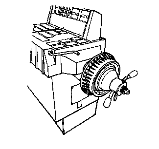

制动盘/制动鼓平衡的检查
1.
用合适的举升机支撑车辆驱动桥。参见
举升和顶起车辆
。
2.
将轮胎和车轮总成从驱动桥上拆下。参见
轮胎和车轮的拆卸和安装
。
3.
重新安装车轮螺母，以固定制动盘。
4.
使车辆在出现振动问题的速度下行驶，同时检查是否出现振动。
告诫：
在制动盘和/或制动鼓拆下时或制动钳移开制动盘时，不要踩制动踏板，否则可能导致制动系统损坏。
5.
如果仍然出现振动，将制动盘从驱动桥上拆下，然后使车辆在出现振动问题的速度下行驶。
6.
制动盘从驱动桥上拆下后，如果振动消失，则一次安装一个制动盘重复进行测试。更换导致或引起振动问题的制动盘。

7.
如果按照前面的步骤更换了制动盘，或者如果需要确认前面步骤中所获得的结果，和/或检查驱动桥部件以外的其他部件，则执行以下步骤：
7.1
采用与轮胎和车轮总成相同的方式将制动盘/鼓安装到平衡机上。
注意:
仅检查制动盘/鼓是否存在静失衡；忽略动失衡的读数。
7.2
检查制动盘/鼓是否静失衡。
制动盘/制动鼓静失衡没有规定的公差。但是，任何制动盘/制动鼓按这一方式测量，如果不平衡量超过了21克（¾盎司），可能导致或引起振动。导致或引起振动的可疑制动盘/制动鼓应该更换。应以相同方式检查所有已更换的制动盘/制动鼓是否失衡。